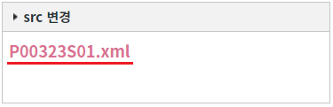

WidgetContainer에 추가된 위젯의 화면(src)을 변경하는 예제입니다. 추가된 위젯 객체의 함수 'setSrc'를 사용하여 구현할 수 있습니다.
위젯 객체를 반환하는 주요 함수는 다음과 같습니다.
getWidgetById: 위젯의 'id'를 받아 widget 객체를 반환
getWidgetByTitle: 위젯의 'title'을 받아 widget 객체를 반환
추가된 위젯의 화면(src) 변경하기
STEP 1. 초기 상태를 확인합니다.
WidgetContainer에 위젯 옵션 'src 변경'이 추가되어 있습니다. 예제 테스트를 위해 위젯의 우측 상단의 기능 버튼은 모두 제거된 상태입니다.
그림 1.브라우저(Chrome) 실행 예시
STEP 2. 추가된 위젯의 화면을 'P00323S02.xml'로 변경하기
버튼 위젯의 화면을 'P00323S02.xml'로 변경하기을 클릭합니다.STEP 3. 실행된 결과를 확인합니다.
위젯의 화면이 'P00323S02.xml'로 변경됩니다. 위젯 콘텐츠에 문자열 'P00323S02.xml'이 표시되어있습니다.
그림 2.브라우저(Chrome) 실행 예시
STEP 4. 추가된 위젯의 화면을 'P00323S01.xml'로 변경하기
버튼 위젯의 화면을 'P00323S01.xml'로 변경하기을 클릭합니다.STEP 5. 실행된 결과를 확인합니다.
위젯의 화면이 'P00323S01.xml'로 변경됩니다. 위젯 콘텐츠에 문자열 'P00323S01.xml'이 표시되어있습니다.
그림 3.브라우저(Chrome) 실행 예시

WidgetContainer의 추가된 위젯 객체의 함수 'setSrc'를 사용하여 구현할 수 있습니다. 위젯 객체를 반환하는 주요 함수는 다음과 같습니다.
getWidgetById: [권장] 위젯의 'id'를 받아 widget 객체를 반환
getWidgetByTitle: 위젯의 'title'을 받아 widget 객체를 반환
세부 지정은 아래의 스크립트 예시에 작성되어 있습니다.
스크립트
// WidgetContainer에 추가된 위젯의 ID가 'wgc_exam1'인 위젯 객체를 반환받습니다. (함수 'addWidgets'의 첫 번째 인자의 위젯 옵션 'id'에 정의한 값) let objWidget = wgc_exam1.getWidgetById("wg_exam1"); // 위젯의 파일 경로를 "/page/P00323S02.xml"로 변경합니다. objWidget.setSrc("/page/P00323S02.xml");
함수 'addWidgets' 스크립트
// WidgetContainer의 함수 'addWidgets' 호출 예시 wgc_exam1.addWidgets({ id: "wg_exam1", // WidgetContainer의 함수 'getWidgetById'의 인자로 사용 src: "/page/P00323S01.xml", scope: true, unitWidth: 1, unitHeight: 5, title: "src 변경" });
getWidgetById( id )
[Widget Object].setSrc( pagePath )
[웹스퀘어5 SP5 개발 가이드] WidgetContainer
링크 : https://docs1.inswave.com/sp5_user_guide/2059d4ce88b2fc16#6f01c6c535be09d8
[웹스퀘어5 SP5 개발 가이드] WidgetContainer - 접근
링크 : https://docs1.inswave.com/sp5_user_guide/2059d4ce88b2fc16#f012384c8b610d9f